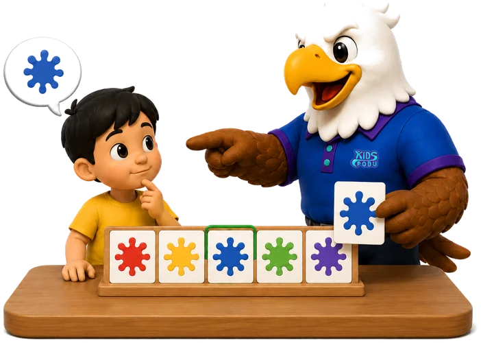
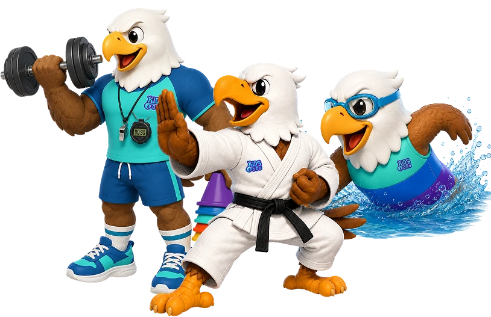
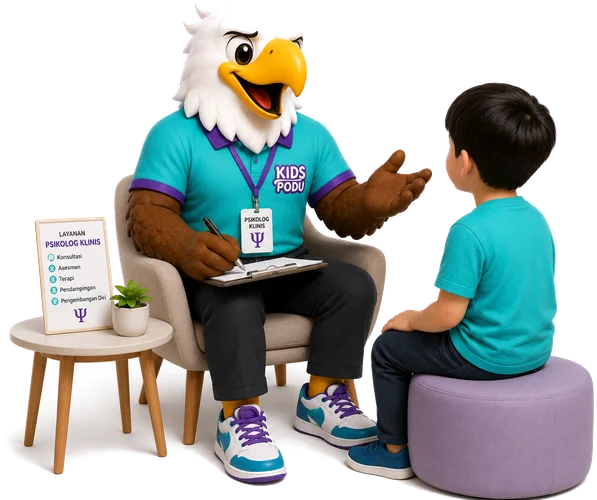
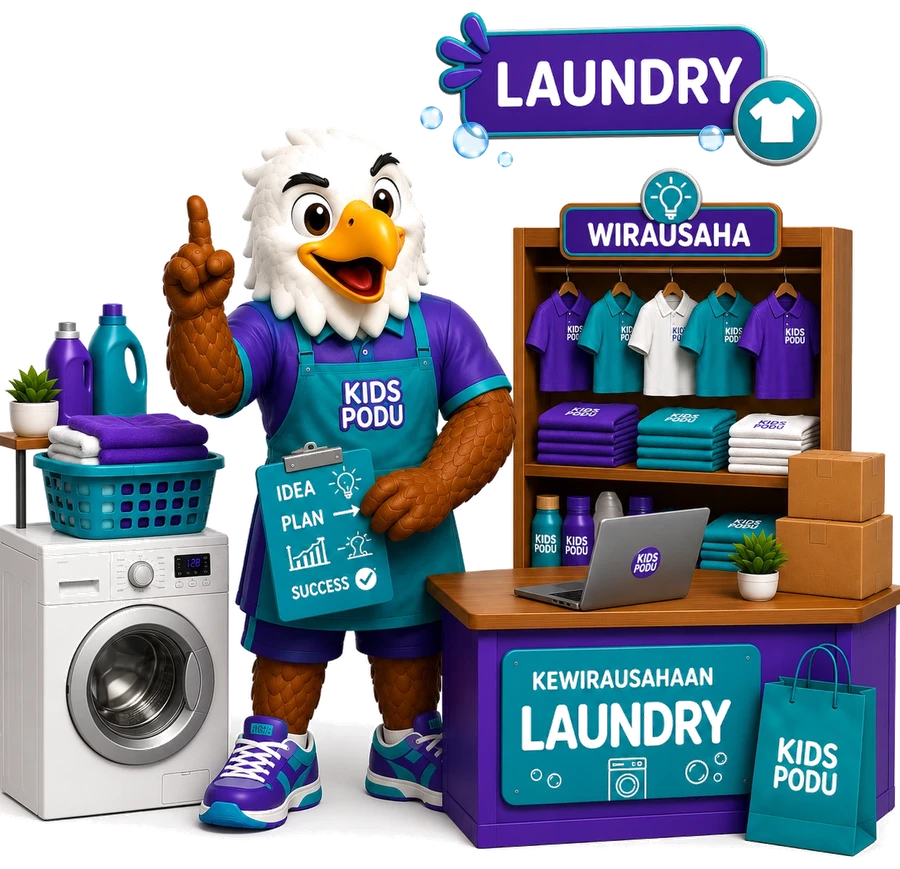
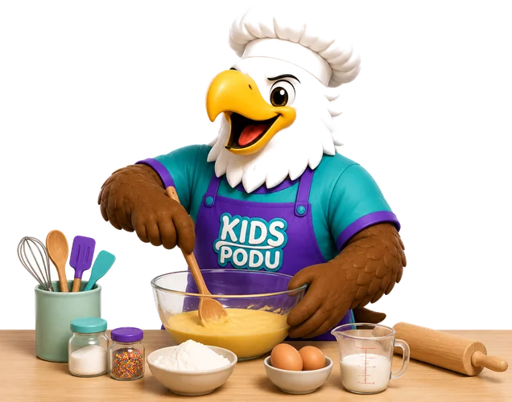
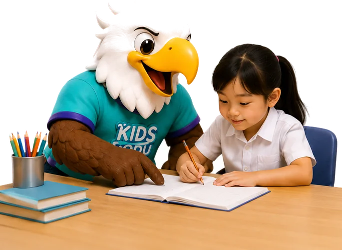
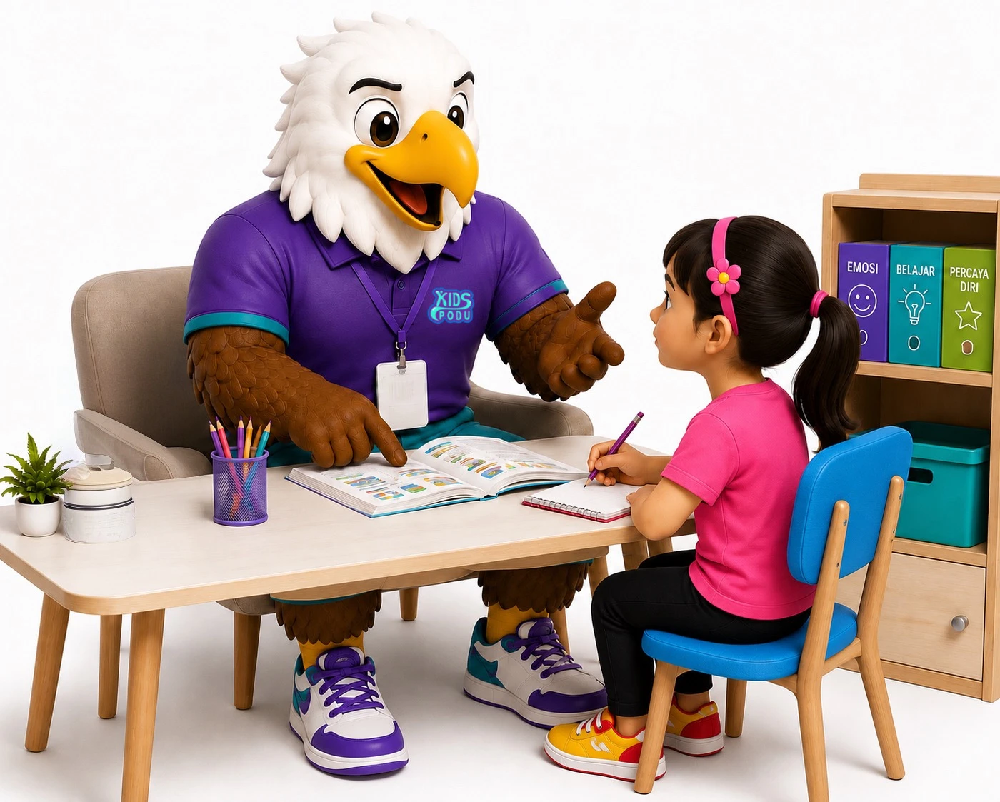
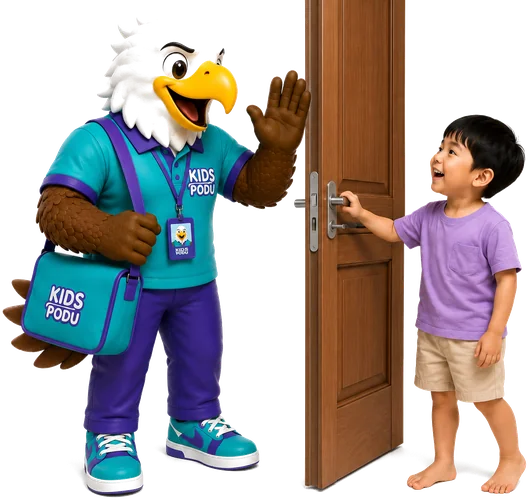
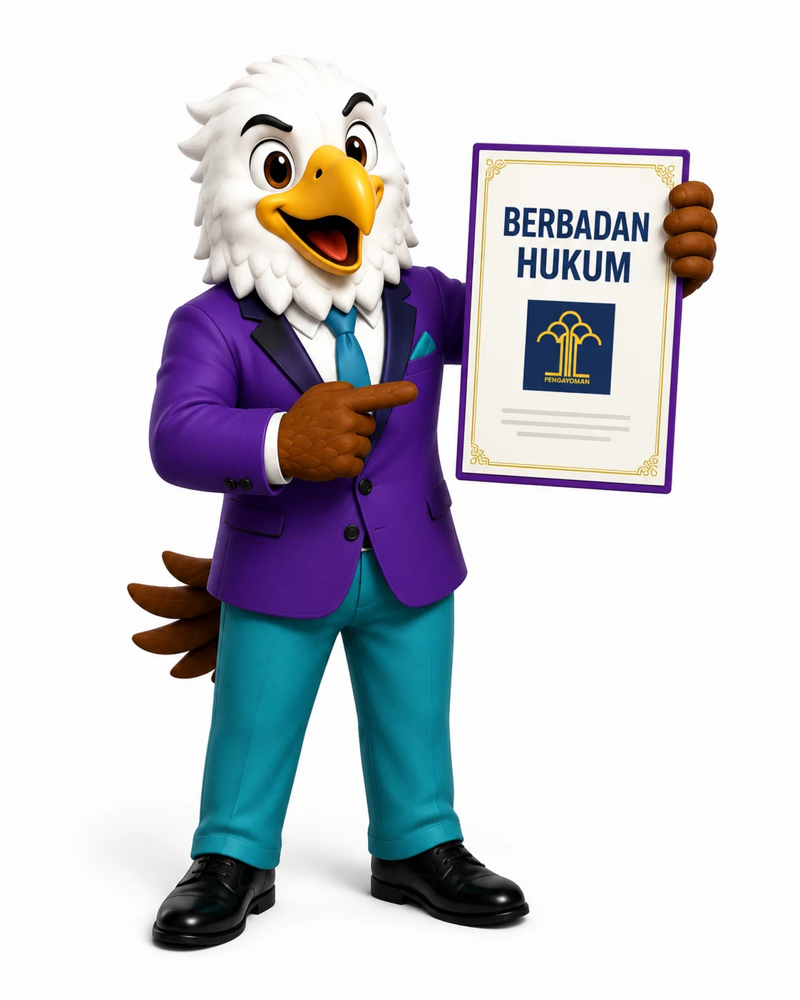
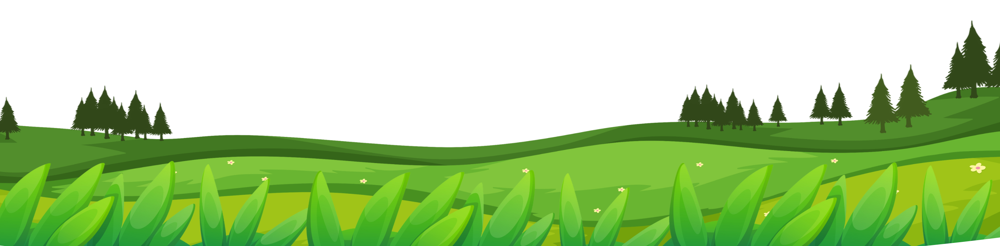

Anak Terdaftar di KidsPodu
KidsPodu (Kids Sport & Education) adalah Yayasan pendidikan yang berizin resmi, menyediakan layanan olahraga, pembelajaran tambahan, dan terapi bagi anak reguler maupun anak berkebutuhan khusus (ABK). Dengan didukung tenaga pendidik, pelatih, dan terapis yang berpengalaman, kami berkomitmen memberikan layanan yang profesional, aman, dan menyenangkan untuk membantu setiap anak mengembangkan potensi, meningkatkan kemampuan akademik maupun nonakademik, serta tumbuh menjadi pribadi yang mandiri, percaya diri, dan berkarakter.

Terapi Perilaku, Okupasi & Wicara oleh tenaga berpengalaman

Karate, Renang & Kebugaran Jasmani yang aman dan menyenangkan

Asesmen, tes intelegensi, minat bakat & kepribadian

Laundry & Kewirausahaan untuk bekal kemandirian

Bina diri & aktivitas sehari-hari

Pendamping belajar di semua jenjang pendidikan

Pembelajaran intervensi di semua jenjang pendidikan

Layanan kunjungan ke rumah untuk pendampingan anak

Berbadan hukum resmi
AHU-0001522.AHA.01.12 · NIB 1403260032975
Update kegiatan & momen seru anak-anak KidsPodu, langsung dari Instagram dan TikTok kami.
🎬 Reels
🖼️ Feed
Tips, cerita kegiatan, dan info seputar tumbuh kembang anak dari tim KidsPodu.

Yuk, konsultasikan kebutuhan anak Anda bersama tim kami.